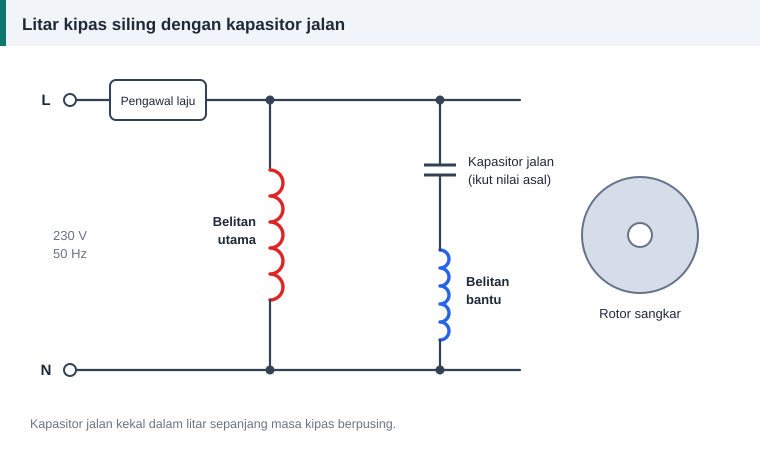

Motor satu fasa
Melilit Semula Kipas Siling: Panduan untuk Pemula
Kipas siling yang berpusing perlahan atau langsung tidak bergerak tidak semestinya perlu dililit semula. Sering kali puncanya lebih murah daripada itu. Mari mulakan dengan yang mudah dahulu.
Semak ini dahulu
- Kapasitor. Kapasitor jalan yang lemah ialah punca biasa kipas perlahan. Ganti dengan nilai mikrofarad yang sama seperti tercetak pada kapasitor asal.
- Galas. Putar kipas dengan tangan. Ia patut berpusing bebas dan senyap.
- Pengawal laju dan pendawaian. Cuba sambungan terus tanpa pengawal.
- Belitan. Barulah ukur rintangan dan uji penebatan.


Binaan yang terbalik
Kebanyakan kipas siling biasa menggunakan motor aruhan kapasitor jalan dengan binaan rotor luar. Stator yang berbelit berada di tengah dan terikat pada batang gantung. Rotor sangkar berbentuk gelang berpusing di sekelilingnya bersama badan kipas dan bilah. Alur stator menghadap ke luar.
Kipas model baharu jenis BLDC menggunakan magnet kekal dan papan elektronik. Panduan ini tidak meliputi jenis itu.
Dua belitan, banyak kutub
Stator kipas siling mempunyai banyak kutub supaya lajunya rendah. Belitan utama dan belitan bantu dililit dalam alur berasingan atau berlapis, bergantung pada model. Belitan bantu disambung bersiri dengan kapasitor.
Bilangan lilitan dan saiz dawai berbeza antara jenama dan model. Tiada angka umum yang selamat diikuti. Salin daripada belitan asal kipas anda.
Merekod sebelum membuka belitan
- Bilangan alur, dan bilangan gegelung bagi belitan utama serta bantu.
- Arah lilitan setiap gegelung.
- Bilangan lilitan setiap gegelung bagi kedua-dua belitan.
- Diameter dawai kedua-dua belitan.
- Warna dan kedudukan wayar keluar: sepunya, utama dan bantu.
Langkah kerja
- Tanggalkan bilah, turunkan kipas dan buka badannya.
- Tandakan kedudukan penutup atas dan bawah supaya dapat dipasang seperti asal.
- Potong dan keluarkan belitan lama sambil mengira lilitan.
- Bersihkan alur dan pasang kertas penebat baharu.
- Lilit gegelung mengikut arah yang direkod. Dalam belitan kutub berselang, setiap gegelung dililit berlawanan arah dengan jirannya.
- Sambung hujung, pateri dan sarungkan.
- Uji rintangan kedua-dua belitan dan penebatan ke teras.
- Varnis dan keringkan.
- Pasang semula dan pastikan rotor berpusing bebas tanpa bergesel.
Jika arah pusingan terbalik
Tukar sambungan dua hujung belitan bantu, atau dua hujung belitan utama, tetapi bukan kedua-duanya.
Bila tidak berbaloi
Jika teras berkarat teruk, galas longgar di dalam perumahnya, atau harga kipas baharu hampir sama dengan kos dawai dan masa, penggantian mungkin lebih wajar.
Keselamatan
Kipas siling disambung terus kepada pendawaian rumah. Matikan suis utama, uji ketiadaan voltan dan nyahcas kapasitor sebelum menyentuh apa-apa. Langkah penuh ada dalam keselamatan semasa membaiki motor.
Rujukan dan bacaan lanjut
Artikel berkaitan
Kapasitor Mula dan Kapasitor Jalan: Perbezaan, Nilai dan Cara Menguji
Kapasitor mula memberi tork permulaan, kapasitor jalan kekal bekerja sepanjang masa. Ketahui perbezaan binaan, kadaran, tanda kerosakan dan cara menggantinya dengan selamat.
Motor Satu Fasa: Belitan Utama dan Belitan Bantu
Motor satu fasa memerlukan dua belitan untuk mula berpusing. Fahami peranan belitan utama, belitan bantu, kapasitor dan suis emparan sebelum melilit semula motor jenis ini.
Cara Merekod Data Belitan Sebelum Membuka Motor
Lima minit mencatat data sebelum memotong belitan lama menjimatkan berjam-jam meneka kemudian. Gunakan senarai semak ini untuk plat nama, teras, gegelung, dawai dan sambungan.